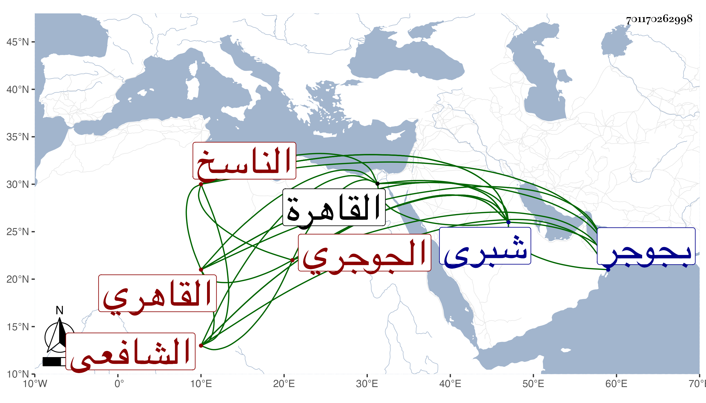

0902Sakhawi.DawLamic.ITO20230111-ara1.EIS1600.701170262998
Biography ID: 701170262998
54
محمد بن محمد بن محمود بن أبي بكر بن عبد الله بن ظاهر بالمعجمة الشمس ابن ناصر الدين الجوجري ثم القاهري الشافعي الناسخ نزيل شبرى وخطيبها وشاهدها ولد في سنة تسع وأربعين وثمانمائة بجوجر وقرأ بها جل القرآن ثم تحول مع أبويه فأكمله بمنية بدر وحفظ فيها الملحة والجرومية ونحو نصف المنهاج ثم تحول معهما أيضا إلى شبرى الخيمة فقرأ في المنهاج عند جماعة كالولوي البلقيني قاضيها وخطيبها الشهاب بن عاصم ثم قدم القاهرة فأكمل بها المنهاج وألفية النحو واشتغل في الفقه والعربية وغيرهما عند الأبناسي وابن قاسم وابن خطيب الفخرية بل حضر دروس العبادي والفخر المقسي وأخذ الفرائض والحساب عن البدر المارداني وكذا قرأ علي في الاصطلاح وغيره وكتب أشياء من تصانيفي وكذا كتب غير نسخة من طبقات ابن السبكي الكبرى وجملة وخطه متقن وفهمه حسن وحج وجاور قليلا واستوطن شبرى وانتفع به أهلها في الشهادة ، وله فيها تميز في الجملة وعمل العقود بها وربما نظم . مات بعلة الاستسقاء في ليلة الأحد حادي عشر المحرم سنة اثنتين وتسعين وجيء به في نعش فغسل ودفن بباب الوزير عوضه الله الجنة .
